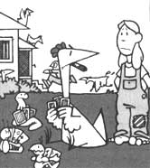

Report From Them That's Doin'
Not every urban household yearns to "get back to the land" someday, and you can bet that our family didn't! We were very much accustomed to a cosmopolitan lifestyle - and loved it - until an unforeseen set of circumstances landed all four of us on three acres of country property . . . complete with chickens, fruit trees, and a very large and prolific garden.
Our accidental rural relocation began when we decided to follow the family's breadwinner to the other side of the world for a four-year job assignment in the Middle East. The move made it necessary for us to rent our lovely ranch-style home . . . which was situated in a quiet residential housing development near Virginia Beach.
At first, renting the house seemed to be a great idea . . . it gave us the extra funds needed to finance several vacations during our stay abroad, and it enabled us to purchase a piece of investment property, consisting of a rundown dwelling set on "three acres, more or less". (The land adjoined a main highway and was zoned for commercial use. We thought it would be a nice location for someone to rent for business purposes.)
Upon our return to the U.S., however, we discovered that our real estate agent had just renewed the tenants' two-year lease on our home! Rather than face the prospect of living in a motel while we tried to work out an equitable agreement to cancel the lease, we decided to take up residence on the as-yet-unrented "investment property". The idea was to move into the old rundown house - temporarily - while we made plans in an unhurried and logical manner.
Our pre-moving chores consisted of installing a septic system to replace the antiquated outhouse on the property, giving the house a coat of paint, laying a new kitchen floor, and building a few miscellaneous cabinets. Finally, we called the storage company to deliver our belongings. Within two weeks we were unpacked, settled in, and HATING IT!
Rather than give in to my misery, I decided to put in a garden (growing plants has always been therapeutic for me). Soon we'd cleared a large plot and planted some vegetables ... and almost immediately fell prey to an influx of seasonal insects that wanted to nibble on the sprouting bounty. A sympathetic neighbor, who'd noticed our vain attempts to do battle with the bugs, suggested that we buy a few chickens as a means of controlling the garden's insect population.
Chickens, he said, would require only a place to sleep at night and a good supply of water. In return, he assured us, they'd provide us with all the fresh eggs we could eat. Well, the notion sounded good . . . so we asked whether he knew where we might find some layers for sale. As it turned out, the fellow just happened to have a few hens and an old rooster available for adoption.
Three sweaty hours of catching and bagging chickens and $20 later, we were the ( proud? ) owners of 18 hens and the meanest rooster I'd ever set eyes on. We jury-rigged a large packing crate - a leftover from our overseas move - into a makeshift henhouse . . . gave the chickens a pail of water . . . and stood back to watch them devour all those nasty garden bugs.
Needless to say, the scene didn't unfold quite as we'd expected it would. The supposed bug disposers went everywhere except toward the garden . . . that ornery rooster attacked anything that moved ( especially Donna, our youngest daughter) . . . and within five minutes the water pail had been knocked over and we were all shouting for help.
At that, our neighbor returned to the scene, laughing a little behind his hand. He proceeded to assist my husband in preparing a list of the "few" supplies needed to turn the packing crate into a secure, waterproof henhouse . . . construct a poultry yard fenced in with chicken wire six feet high . . . and "furnish" the new shelter with nest boxes, bedding, food and water dispensers, and - of course - several hundred pounds of feed and grit.
Four and a half sweaty hours and another $200 later . . . the feathered females - along with their chauvinistic chanticleer - were safely fed and tucked in for the evening. (By the way, the insects enjoyed a long, troublefree night in the garden . . . we could almost hear them laughing!)
Somehow summer soon gave way to fall . . . and - in spite of the bugs - our pantry and freezer were fully stocked. Along the way we had acquired a rather expensive but wholly necessary library of how-to books, a few cats to limit the mouse population in our double-garage-turned-barn, a complicated lawn and garden tractor that possessed far too many attachments . . . and healthy, vibrant complexions.
Then one day as I sat reading about culling nonproductive hens from the flock - and munching on a store-bought apple - our son came up with what (he thought) was a brilliant idea: "Why don't we plant some of the little fruit trees advertised in the garden catalogs?" (We were on everybody's mailing list and surrounded by dozens of the volumes.)
I patiently explained to the boy that we were going to be living in the country only temporarily, until the tenants could conveniently move from our city home. (I considered that a fact beyond question, although Herb - my husband - had begun talking about remodeling and renovating the house to "make it more livable". His reasoning was, he assured me, that the alterations would make it easier to rent the property once we were "back home".)
Nevertheless, before December we'd planted an orchard of 18 dwarf fruit trees, the house was half torn apart and half rebuilt, and Herb was all set to settle down and discuss our future plans.
"After all," he stated, "if we're going to stay here permanently" (permanently?) ". . . we should fertilize and rototill the garden, possibly even expand it. We should clear more land in order to grow feed corn, too, and maybe we could get a little goat this spring . . . .
Permanently? My first reaction was pure panic. My second reaction was pure panic. But the more I thought about our new lifestyle - and about all we had accomplished - the more I realized I truly enjoyed the fresh eggs, the sunshine, and my peaceful mornings and evenings in the garden. I began to recognize that I even derived a certain artistic pleasure in pruning the fruit trees!
The truth was that our whole family had been so busy no one had really missed the city's museums and concerts. In fact, I'd grown accustomed to all the construction activities around the house . . . and realized I was eagerly awaiting the final result. Best of all, our nearly grown children had become Herb's and my companions in work and play . . . and our adult daughters were bringing their families around for longer and more frequent visits.
Quite unaware of what was happening to us, we had accidentally become smallacreage homesteaders ... actually supplying much of our own food in the form of produce from our garden and eggs from our hens. We had come back to the earth and a simple life without conscious intent and - having done so - we were reluctant to give up what we'd found.
As I write this, we are preparing for our second spring on the land, and we have flats of little seedlings ready to plant outdoors. We're excitedly anticipating the first green shoots of new growth on our fruit trees. We can hardly wait to carefully choose the young goat that we hope to raise. In short, we're planning and we're preparing. From now on we won't be accidental homesteaders ... because we're completely at home!
|
 |
|
|